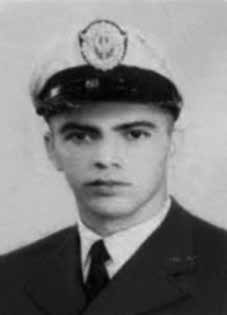

João
Lucas
Alves
CIRCUNSTÂNCIAS DA MORTE
João Lucas Alves morreu no dia 6 de março de 1969, na Delegacia de Furtos e Roubos de Belo Horizonte, em decorrência das torturas sofridas.
O ex-sargento da Aeronáutica tinha sido preso no dia 8 de novembro de 1968 por agentes do SOPS (Serviço de Ordem Política e Social), órgão vinculado à Polícia Federal, tendo sido entregue à Polícia do Exército, na Rua Barão de Mesquita, que era chefiada pelo comandante Coronel O’Reilly. Segundo depoimento de seu advogado, Antônio Modesto da Silveira, João Lucas teria sido levado para a Polícia do Exército antes da edição do AI-5 e retornado, na sequência, ao SOPS, por determinação do Juiz Oswaldo Lima Rodrigues.
Em uma das visitas realizadas pela família no período em que esteve preso no Rio de Janeiro, o militante confidenciou à irmã, Yara Lucas Alves, que tinha medo de morrer nas mãos dos militares. Sem comunicação formal, João Lucas foi transferido para a Delegacia de Furtos e Roubos de Belo Horizonte, onde foi morto. A versão divulgada na época foi a de que João Lucas teria se enforcado na cela que ocupava, dentro da Delegacia de Furtos e Roubos de Belo Horizonte, usando a própria calça como instrumento para o suicídio. Essa versão foi corroborada pelo laudo necroscópico firmado pelos legistas Djezzar Gonçalves e João Bosco Nacif da Silva.
Em depoimento prestado à época dos fatos, o médico Antônio Nogueira Lara Rezende relatou que foi o policial José Lisboa, que estava de plantão na unidade no momento da ocorrência, que deu a notícia sobre a morte de João Lucas, afirmando que o óbito tinha sido decorrente de suicídio. O oficial José Pereira Gonçalves, com a ajuda do motorista Haydn Prates Saraiva, ficou responsável por levar o corpo para o Departamento de Medicina Legal.
O dossiê da investigação sobre a morte de João Lucas Alves, iniciada em 1972 e acompanhada pela Organização dos Estados Americanos (OEA) e pela Comissão Interamericana de Direitos Humanos (CIDH), incluiu depoimentos dos legistas Djezzar Gonçalves e João Bosco Nacif da Silva, do policial militar José Pereira Gonçalves, dos funcionários públicos Haydn Prates Saraiva, José Lisboa e Luiz Soares da Rocha, e da mãe de João Lucas, Odília Pimenta Alves.
À exceção da mãe de João Lucas, os demais depoentes relataram que ele teria sido transferido para Belo Horizonte, em março de 1969, sob a responsabilidade de Luiz Soares da Rocha, superintendente do Policiamento Civil de Minas Gerais, e teria ficado isolado em uma cela da Delegacia de Furtos e Roubos de Belo Horizonte, com comunicação permitida somente por autorização do delegado Antônio Nogueira Lara Rezende, de Luiz Soares da Rocha e de José Lisboa. Os depoentes reafirmaram a versão de que João Lucas teria se enforcado com a própria calça e relataram que seu corpo teria permanecido quase uma semana na geladeira do IML e que, não tendo sido reclamado pela família, teria sido, então, sepultado no Cemitério da Saudade.
O depoimento de Odília Pimenta Alves, prestado em 11 de março de 1969, nega essas declarações. De acordo com seu relato, ela solicitou informações sobre João Lucas às autoridades do Departamento de Vigilância Social (DVS) em 8 de março de 1969, e recebeu a informação de que ele havia sido transferido para a Delegacia de Furtos e Roubos. Nesse local, viu lista de prisioneiros e foi informada de que os presos do DVS eram encaminhados ao Exército. Odília retornou a esse órgão, onde foi recomendada a procurar Luiz Soares da Rocha no Departamento de Investigações, mas não o encontrou.
Somente em 11 de março, ao retornar à Delegacia de Furtos e Roubos, recebeu a notícia da morte de João Lucas Alves, dias atrás, e do enterro já ocorrido. A versão de morte por suicídio pôde ser refutada à época dos fatos, a partir de denúncias de outros presos políticos que testemunharam as torturas sofridas por João Lucas, entre os quais Afonso Celso Lana Leite, Maurício Vieira de Paiva e Antônio Pereira Mattos.
Os presos descreveram que, durante as sessões de tortura, João Lucas teve os olhos perfurados e as unhas arrancadas e que os próprios policiais contaram aos outros presos sobre o ocorrido. Em documento de denúncia produzido pelos presos políticos e intitulado Testemunho de 12 presos políticos torturados, João Lucas é citado como vítima de tortura: “João Lucas Alves foi brutalmente torturado na Delegacia de Furtos, segundo os próprios delgados e investigadores daquela delegacia”.
Outros fatores chamam a atenção para tortura sofrida por João Lucas. Um deles é a foto anexada ao laudo necroscópico, em que é possível observar com clareza o hematoma existente no olho esquerdo da vítima, que não poderia decorrer de enforcamento. Além disso, a própria necropsia aponta para “Duas escoriações lineares alargadas [.]. Escoriações vermelhas [.]. Ausência da unha do primeiro pododáctilo esquerdo”. Toda a descrição expõe escoriações e hematomas que reforçam as denúncias sobre tortura.
Ainda assim, frente a esses fatos, os médicos legistas Djezzar Gonçalves e João Bosco Nacif da Silva assinaram a necropsia atribuindo “asfixia mecânica” à causa de morte. Ambos foram denunciados pelo Grupo Tortura Nunca Mais de Minas Gerais, porém o Conselho Regional de Medicina do estado de Minas Gerais arquivou o caso, sem que investigações fossem realizadas.
Em laudo produzido pela equipe de perícia da CNV a partir da documentação sobre o caso, os peritos concluíram que João Lucas foi vítima de homicídio por estrangulamento, pois no local de sua morte “não havia qualquer sistema engendrado pela vítima, [.] fato que inviabiliza o suicídio”. Os peritos constataram que o estrangulamento não foi realizado diretamente com as mãos do agressor, visto que não havia no pescoço qualquer evidência nesse sentido, mas sim por meio de um instrumento constritor, possivelmente a calça que, segundo o LEC [laudo de exame cadavérico], “envolvia o pescoço da vítima quando da realização da necropsia [.]”.
Para além da causa da morte, o laudo ainda concluiu que João Lucas foi submetido a torturas diversas, em função dos hematomas na região dos olhos, nos pés, nos glúteos e nos ombros. Os ferimentos nas falanges dos pés e a ausência de unhas nos dedos, segundo análise pericial, indica que ele pode ter sido submetido a uma técnica de tortura conhecida como “falanga”, consistente no espancamento repetido dos pés.
O corpo de João Lucas foi sepultado, primeiramente, sem o conhecimento da família. Apenas cinco anos após a morte foi possível realizar a exumação e o traslado do corpo, que foi então sepultado pela família no Cemitério de São João Batista na cidade do Rio de Janeiro.
João Lucas Alves died on March 6, 1969, at the Belo Horizonte Theft and Robbery Police Station, as a result of the torture he suffered.
The former Air Force sergeant had been arrested on November 8, 1968 by agents from the SOPS (Political and Social Order Service), a body linked to the Federal Police, and was handed over to the Army Police, on Rua Barão de Mesquita, which was headed by commander Colonel O’Reilly. According to the testimony of his lawyer, Antônio Modesto da Silveira, João Lucas would have been taken to the Army Police before the publication of AI-5 and subsequently returned to SOPS, as determined by Judge Oswaldo Lima Rodrigues.
During one of the visits made by the family during the period he was imprisoned in Rio de Janeiro, the activist confided to his sister, Yara Lucas Alves, that he was afraid of dying at the hands of the military. Without formal communication, João Lucas was transferred to the Belo Horizonte Theft and Robbery Police Station, where he was killed. The version published at the time was that João Lucas had hanged himself in the cell he occupied, within the Belo Horizonte Theft and Robbery Police Station, using his own pants as an instrument for suicide. This version was corroborated by the necroscopic report signed by coroners Djezzar Gonçalves and João Bosco Nacif da Silva.
In a statement given at the time of the events, doctor Antônio Nogueira Lara Rezende reported that it was police officer José Lisboa, who was on duty at the unit at the time of the incident, who broke the news about João Lucas' death, stating that the death had been due to suicide. Officer José Pereira Gonçalves, with the help of driver Haydn Prates Saraiva, was responsible for taking the body to the Department of Forensic Medicine.
The dossier of the investigation into the death of João Lucas Alves, which began in 1972 and was monitored by the Organization of American States (OAS) and the Inter-American Commission on Human Rights (IACHR), included testimonies from coroners Djezzar Gonçalves and João Bosco Nacif da Silva, military police officer José Pereira Gonçalves, public servants Haydn Prates Saraiva, José Lisboa and Luiz Soares da Rocha, and João Lucas' mother, Odília Pimenta Alves.
With the exception of João Lucas's mother, the other witnesses reported that he had been transferred to Belo Horizonte, in March 1969, under the responsibility of Luiz Soares da Rocha, superintendent of the Civil Police of Minas Gerais, and had been isolated in a cell at the Belo Horizonte Theft and Robbery Police Station, with communication permitted only with authorization from police chief Antônio Nogueira Lara Rezende, Luiz Soares da Rocha and José Lisboa. The deponents reaffirmed the version that João Lucas had hanged himself with his own pants and reported that his body had remained in the IML refrigerator for almost a week and that, having not been claimed by his family, he was then buried in the Saudade Cemetery.
The testimony of Odília Pimenta Alves, given on March 11, 1969, denies these statements. According to her report, she requested information about João Lucas from the authorities of the Department of Social Surveillance (DVS) on March 8, 1969, and received information that he had been transferred to the Theft and Robbery Police Station. There, she saw a list of prisoners and was informed that DVS prisoners were sent to the Army. Odília returned to that body, where she was recommended to look for Luiz Soares da Rocha in the Investigations Department, but she was unable to find him.
Only on March 11, when he returned to the Theft and Robbery Police Station, he received news of the death of João Lucas Alves, a few days ago, and of the burial that had already taken place. The version of death by suicide could be refuted at the time of the events, based on complaints from other political prisoners who witnessed the torture suffered by João Lucas, including Afonso Celso Lana Leite, Maurício Vieira de Paiva and Antônio Pereira Mattos.
The prisoners described that, during the torture sessions, João Lucas had his eyes pierced and his nails pulled out and that the police themselves told the other prisoners about what happened. In a complaint document produced by political prisoners and entitled Testimony of 12 tortured political prisoners, João Lucas is mentioned as a victim of torture: “João Lucas Alves was brutally tortured at the Theft Police Station, according to the police officers and investigators at that police station themselves”.
Other factors draw attention to the torture suffered by João Lucas. One of them is the photo attached to the autopsy report, in which it is possible to clearly see the bruise on the victim's left eye, which could not have resulted from hanging. Furthermore, the necropsy itself points to “Two enlarged linear abrasions [.]. Red abrasions [.]. Absence of the nail of the first left toe”. The entire description exposes abrasions and bruises that reinforce allegations of torture.
Even so, given these facts, coroners Djezzar Gonçalves and João Bosco Nacif da Silva signed the autopsy attributing “mechanical asphyxiation” to the cause of death. Both were denounced by the Grupo Tortura Nunca Mais de Minas Gerais, but the Regional Council of Medicine of the state of Minas Gerais archived the case, without investigations being carried out.
In a report produced by the CNV forensic team based on the documentation about the case, the experts concluded that João Lucas was the victim of homicide by strangulation, as at the place of his death “there was no system created by the victim, [.] a fact that makes suicide impossible”. The experts found that the strangulation was not carried out directly with the aggressor's hands, as there was no evidence to that effect on the neck, but rather through a constricting instrument, possibly the pants which, according to the LEC [cadaveric examination report], “wrapped the victim's neck when the necropsy was carried out [.]”.
In addition to the cause of death, the report also concluded that João Lucas was subjected to various tortures, due to bruises around his eyes, feet, buttocks and shoulders. The injuries to the phalanges of his feet and the absence of nails on his fingers, according to expert analysis, indicate that he may have been subjected to a torture technique known as “falanga”, consisting of the repeated beating of his feet.
João Lucas' body was buried, first, without the family's knowledge. Only five years after the death was it possible to exhume and transfer the body, which was then buried by the family in the São João Batista Cemetery in the city of Rio de Janeiro.
João Lucas Alves murió el 6 de marzo de 1969, en la Comisaría de Hurtos y Robos de Belo Horizonte, como consecuencia de las torturas que sufrió.
El ex sargento de la Fuerza Aérea había sido detenido el 8 de noviembre de 1968 por agentes del SOPS (Servicio de Orden Político y Social), organismo vinculado a la Policía Federal, y entregado a la Policía del Ejército, en la Rua Barão de Mesquita, dirigida por el comandante coronel O'Reilly. Según el testimonio de su abogado, Antônio Modesto da Silveira, João Lucas habría sido llevado a la Policía Militar antes de la publicación del AI-5 y posteriormente devuelto al SOPS, según determinó el juez Oswaldo Lima Rodrigues.
Durante una de las visitas de la familia durante su encarcelamiento en Río de Janeiro, el activista le confió a su hermana, Yara Lucas Alves, que tenía miedo de morir a manos de los militares. Sin comunicación formal, João Lucas fue trasladado a la Comisaría de Hurtos y Robos de Belo Horizonte, donde fue asesinado. La versión publicada en ese momento era que João Lucas se había ahorcado en la celda que ocupaba, dentro de la Comisaría de Hurtos y Hurtos de Belo Horizonte, utilizando su propio pantalón como instrumento para suicidarse. Esta versión fue corroborada por el informe necroscópico firmado por los forenses Djezzar Gonçalves y João Bosco Nacif da Silva.
En declaración dada en el momento de los hechos, el médico Antônio Nogueira Lara Rezende informó que fue el policía José Lisboa, que se encontraba de servicio en la unidad en el momento del incidente, quien dio la noticia de la muerte de João Lucas, afirmando que se había producido por suicidio. El oficial José Pereira Gonçalves, con la ayuda del conductor Haydn Prates Saraiva, fue el encargado de trasladar el cuerpo al Departamento de Medicina Legal.
El expediente de la investigación sobre la muerte de João Lucas Alves, iniciada en 1972 y supervisada por la Organización de Estados Americanos (OEA) y la Comisión Interamericana de Derechos Humanos (CIDH), incluyó testimonios de los médicos forenses Djezzar Gonçalves y João Bosco Nacif da Silva, el policía militar José Pereira Gonçalves, los servidores públicos Haydn Prates Saraiva, José Lisboa y Luiz Soares da Rocha, y João Lucas. madre, Odília Pimenta Alves.
Con excepción de la madre de João Lucas, los demás testigos informaron que éste había sido trasladado a Belo Horizonte, en marzo de 1969, bajo la responsabilidad de Luiz Soares da Rocha, superintendente de la Policía Civil de Minas Gerais, y había sido aislado en una celda de la Comisaría de Robos y Robos de Belo Horizonte, siendo posible la comunicación sólo con autorización del jefe de policía Antônio Nogueira Lara Rezende, Luiz Soares da Rocha y José Lisboa. Los declarantes reafirmaron la versión de que João Lucas se había ahorcado con su propio pantalón e informaron que su cuerpo permaneció en el refrigerador del IML durante casi una semana y que, al no haber sido reclamado por su familia, fue luego enterrado en el Cementerio de Saudade.
El testimonio de Odília Pimenta Alves, prestado el 11 de marzo de 1969, desmiente estas afirmaciones. Según su relato, solicitó información sobre João Lucas a las autoridades de la Dirección de Vigilancia Social (DVS) el 8 de marzo de 1969, y recibió información de que había sido trasladado a la Comisaría de Hurtos y Hurtos. Allí vio una lista de prisioneros y le informaron que los prisioneros del DVS habían sido enviados al ejército. Odília regresó a ese cuerpo, donde le recomendaron buscar a Luiz Soares da Rocha en el Departamento de Investigaciones, pero no logró encontrarlo.
Recién el 11 de marzo, cuando regresó a la Comisaría de Hurtos y Hurtos, recibió la noticia de la muerte de João Lucas Alves, hacía unos días, y del entierro que ya se había producido. La versión de muerte por suicidio pudo ser refutada en el momento de los hechos, a partir de denuncias de otros presos políticos que presenciaron las torturas sufridas por João Lucas, entre ellos Afonso Celso Lana Leite, Maurício Vieira de Paiva y Antônio Pereira Mattos.
Los presos describieron que, durante las sesiones de tortura, a João Lucas le perforaron los ojos y le arrancaron las uñas y que los propios policías contaron lo sucedido a los demás presos. En un documento de denuncia elaborado por presos políticos y titulado Testimonio de 12 presos políticos torturados, se menciona a João Lucas como víctima de tortura: “João Lucas Alves fue brutalmente torturado en la Comisaría de Robos, según los propios policías e investigadores de esa comisaría”.
Otros factores llaman la atención sobre las torturas sufridas por João Lucas. Una de ellas es la fotografía adjunta al informe de la autopsia, en la que se puede ver claramente el hematoma en el ojo izquierdo de la víctima, que no pudo haber sido consecuencia del ahorcamiento. Además, la propia necropsia señala "Dos abrasiones lineales agrandadas [.]. Abrasiones rojas [.]. Ausencia de la uña del primer dedo del pie izquierdo". Toda la descripción expone abrasiones y magulladuras que refuerzan las acusaciones de tortura.
Aun así, ante estos hechos, los forenses Djezzar Gonçalves y João Bosco Nacif da Silva firmaron la autopsia atribuyendo la “asfixia mecánica” a la causa de la muerte. Ambos fueron denunciados por el Grupo Tortura Nunca Mais de Minas Gerais, pero el Consejo Regional de Medicina del estado de Minas Gerais archivó el caso, sin que se realizaran investigaciones.
En un informe elaborado por el equipo forense de la CNV con base en la documentación del caso, los peritos concluyeron que João Lucas fue víctima de homicidio por estrangulamiento, ya que en el lugar de su muerte “no existía ningún sistema creado por la víctima, [.] hecho que imposibilita el suicidio”. Los peritos determinaron que el estrangulamiento no se realizó directamente con las manos del agresor, ya que no existía evidencia al respecto en el cuello, sino a través de un instrumento de constricción, posiblemente el pantalón que, según la LEC [informe de examen cadavérico], “envolvió el cuello de la víctima cuando se realizó la necropsia [.]”.
Además de la causa de la muerte, el informe también concluyó que João Lucas fue sometido a diversas torturas, debido a hematomas en los ojos, pies, nalgas y hombros. Las lesiones en las falanges de los pies y la ausencia de uñas en los dedos, según peritajes, indican que pudo haber sido sometido a una técnica de tortura conocida como “falanga”, consistente en golpes repetidos en los pies.
El cuerpo de João Lucas fue enterrado, primero, sin el conocimiento de la familia. Sólo cinco años después del fallecimiento fue posible exhumar y trasladar el cuerpo, que luego fue enterrado por la familia en el Cementerio São João Batista de la ciudad de Río de Janeiro.